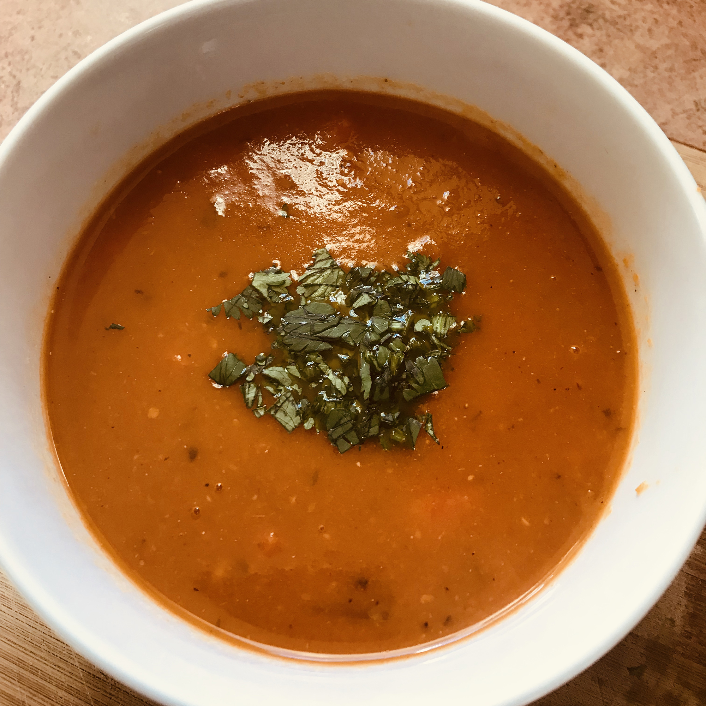

Tomato Soup

Description
Prep:
10 mins
Cook:
50 mins
Total:
1 hr
Servings:
6
Ingredients
- 3 pounds roma (plum) tomatoes, quartered
- 1 yellow onion, halved and quartered
- ½ red bell pepper, chopped
- 3 tablespoons olive oil
- 1 tablespoon sea salt
- 1 ½ teaspoons freshly ground black pepper
- 3 cloves garlic, halved
- 5 cups low-sodium chicken broth
- 2 teaspoons dried basil
- 1 teaspoon dried parsley
Directions
- Preheat the oven to 400 degrees F (200 degrees C). Line a large baking sheet with aluminum foil.
- Spread tomatoes, onion, and red bell pepper in one layer onto the prepared baking sheet. Drizzle olive oil over the tomato mixture and
season with salt and pepper.
- Roast in the preheated oven for 30 minutes; add garlic and continue roasting until tomato mixture is tender, about 15 more minutes.
- Meanwhile, bring chicken broth, basil, and parsley to a boil in a large stockpot; reduce heat and simmer.
- Put half the tomato mixture into a blender. Cover and hold lid down; pulse a few times before leaving on to blend until smooth,
adding a small amount of the warm chicken broth if liquid is needed. Pour pureed tomato mixture into the stockpot with chicken broth.
Puree remaining half of the tomato mixture and add to chicken stock mixture, stirring well.
Simmer together for 5 minutes.